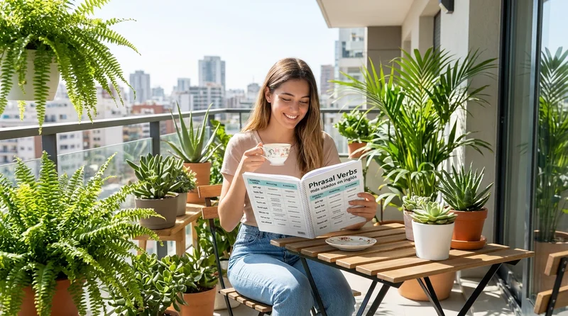

Phrasal Verbs
Phrasal verbs mas usados en ingles con significado
Aprende todo sobre phrasal verbs mas usados en ingles con significado con ejemplos prácticos y explicaciones claras en EnglishMaster.
Lectura: 5 min
Leer →